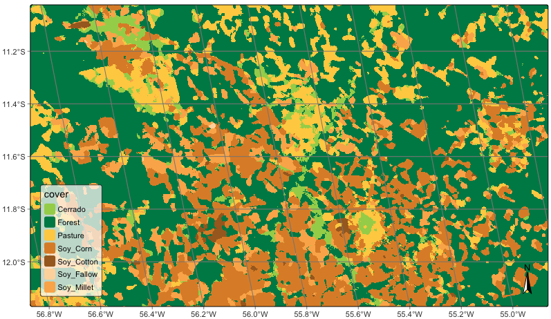

30 Including new methods for machine learning
Configurations to run this chapter
30.1 Introduction
This section provides guidance for experts that want to include new methods for machine learning that work in connection with sits. The discussion below assumes familiarity with the R language. Developers should consult Hadley Wickham’s excellent book Advanced R, especially Chapter 10 on “Function Factories”.
30.2 Common features for all classification algorithms
All machine learning and deep learning algorithm in sits follow the same logic; all models are created by sits_train(). This function has two parameters: (a) samples, a set of time series with the training samples; (b) ml_method, a function that fits the model to the input data. The result is a function that is passed on to sits_classify() to classify time series or data cubes. The structure of sits_train() is simple, as shown below.
sits_train <- function(samples, ml_method){
# train a ml classifier with the given data
result <- ml_method(samples)
# return a valid machine learning method
return(result)
}In R terms, sits_train() is a function factory, i.e., a function that makes functions. Such behavior is possible because functions are first-class objects in R. In other words, they can be bound to a name in the same way that variables are. A second propriety of R is that functions capture (enclose) the environment in which they are created. In other words, when a function is returned as a result of another function, the internal variables used to create it are available inside its environment. In programming language, this technique is called “closure”.
The following definition from Wikipedia captures the purpose of clousures: “Operationally, a closure is a record storing a function together with an environment. The environment is a mapping associating each free variable of the function with the value or reference to which the name was bound when the closure was created. A closure allows the function to access those captured variables through the closure’s copies of their values or references, even when the function is invoked outside their scope.”
In sits, the properties of closures are used as a basis for making training and classification independent. The return of sits_train() is a model that contains information on how to classify input values, as well as information on the samples used to train the model.
30.3 Transforming samples into predictors for ML models
To ensure all models work in the same fashion, machine learning functions in sits also share the same data structure for prediction. This data structure is created by sits_predictors(), which transforms the time series tibble into a set of values suitable for using as training data, as shown in the following example.
data("samples_matogrosso_mod13q1", package = "sitsdata")
pred <- sits_predictors(samples_matogrosso_mod13q1)
predThe predictors tibble is organized as a combination of the “X” and “Y” values used by machine learning algorithms. The first two columns are sample_id and label. The other columns contain the data values, organized by band and time. For machine learning methods that are not time-sensitive, such as Random Forest, this organization is sufficient for training. In the case of time-sensitive methods such as tempCNN, further arrangements are necessary to ensure the tensors have the right dimensions. Please refer to the sits_tempcnn() source code for an example of how to adapt the prediction table to appropriate torch tensor.
30.4 Data normalization
Some ML algorithms, such as svm, require data normalization. Therefore, the sits_predictors() code is usually combined with methods that extract statistical information and then normalize the data, as in the example below.
# Data normalization
ml_stats <- sits_stats(samples)
# extract the training samples
train_samples <- sits_predictors(samples)
# normalize the training samples
train_samples <- sits_pred_normalize(pred = train_samples, stats = ml_stats)30.5 Implementing the LightGBM algorithm
The following example shows the implementation of the LightGBM algorithm, designed to efficiently handle large-scale datasets and perform fast training and inference [1]. Gradient boosting is a machine learning technique that builds an ensemble of weak prediction models, typically decision trees, to create a stronger model. LightGBM specifically focuses on optimizing the training and prediction speed, making it particularly suitable for large datasets. The example builds a model using the lightgbm package. This model will then be applied later to obtain a classification.
Since LightGBM is a gradient boosting model, it uses part of the data as testing data to improve the model’s performance. The split between the training and test samples is controlled by a parameter, as shown in the following code extract.
# split the data into training and validation datasets
# create partitions different splits of the input data
test_samples <- sits_pred_sample(train_samples,
frac = validation_split
)
# Remove the lines used for validation
sel <- !(train_samples$sample_id %in% test_samples$sample_id)
train_samples <- train_samples[sel, ]To include the lightgbm package as part of sits, we need to create a new training function which is compatible with the other machine learning methods of the package and will be called by sits_train(). For compatibility, this new function will be called sits_lightgbm(). Its implementation uses two functions from the lightgbm: (a) lgb.Dataset(), which transforms training and test samples into internal structures; (b) lgb.train(), which trains the model.
The parameters of lightgbm::lgb.train() are: (a) boosting_type, boosting algorithm; (b) objective, classification objective (c) num_iterations, number of runs; (d) max_depth, maximum tree depth; (d) min_samples_leaf, minimum size of data in one leaf (to avoid overfitting); (f) learning_rate, learning rate of the algorithm; (g) n_iter_no_change, number of successive iterations to stop training when validation metrics do not improve; (h) validation_split, fraction of training data to be used as validation data.
# install "lightgbm" package if not available
if (!require("lightgbm")) install.packages("lightgbm")
# create a function in sits style for LightGBM algorithm
sits_lightgbm <- function(samples = NULL,
boosting_type = "gbdt",
objective = "multiclass",
min_samples_leaf = 10,
max_depth = 6,
learning_rate = 0.1,
num_iterations = 100,
n_iter_no_change = 10,
validation_split = 0.2, ...){
# function that returns a model based on training data
train_fun <- function(samples) {
# Extract the predictors
train_samples <- sits_predictors(samples)
# find number of labels
labels <- sits_labels(samples)
n_labels <- length(labels)
# lightGBM uses numerical labels starting from 0
int_labels <- c(1:n_labels) - 1
# create a named vector with integers match the class labels
names(int_labels) <- labels
# add number of classes to lightGBM params
# split the data into training and validation datasets
# create partitions different splits of the input data
test_samples <- sits_pred_sample(train_samples,
frac = validation_split
)
# Remove the lines used for validation
sel <- !(train_samples$sample_id %in% test_samples$sample_id)
train_samples <- train_samples[sel, ]
# transform the training data to LGBM dataset
lgbm_train_samples <- lightgbm::lgb.Dataset(
data = as.matrix(train_samples[, -2:0]),
label = unname(int_labels[train_samples[[2]]])
)
# transform the test data to LGBM dataset
lgbm_test_samples <- lightgbm::lgb.Dataset(
data = as.matrix(test_samples[, -2:0]),
label = unname(int_labels[test_samples[[2]]])
)
# set the parameters for the lightGBM training
lgb_params <- list(
boosting_type = boosting_type,
objective = objective,
min_samples_leaf = min_samples_leaf,
max_depth = max_depth,
learning_rate = learning_rate,
num_iterations = num_iterations,
n_iter_no_change = n_iter_no_change,
num_class = n_labels
)
# call method and return the trained model
lgbm_model <- lightgbm::lgb.train(
data = lgbm_train_samples,
valids = list(test_data = lgbm_test_samples),
params = lgb_params,
verbose = -1,
...
)
# serialize the model for parallel processing
lgbm_model_string <- lgbm_model$save_model_to_string(NULL)
# construct model predict closure function and returns
predict_fun <- function(values) {
# reload the model (unserialize)
lgbm_model <- lightgbm::lgb.load(model_str = lgbm_model_string)
# predict probabilities
prediction <- stats::predict(lgbm_model,
newdata = as.matrix(values),
type = "response"
)
# adjust the names of the columns of the probs
colnames(prediction) <- labels
# retrieve the prediction results
return(prediction)
}
# Set model class
# This tells sits that the resulting function
# will be handled as a prediction model
class(predict_fun) <- c("lightgbm_model",
"sits_model",
class(predict_fun))
return(predict_fun)
}
result <- sits_factory_function(samples, train_fun)
return(result)
}30.6 Understanding how models are organized in SITS
The above code has two nested functions: train_fun() and predict_fun(). When sits_lightgbm() is called, train_fun() transforms the input samples into predictors and uses them to train the algorithm, creating a model (lgbm_model). This model is included as part of the function’s closure and becomes available at classification time. Inside train_fun(), we include predict_fun(), which applies the lgbm_model object to classify to the input values. The train_fun object is then returned as a closure, using the sits_factory_function constructor. This function allows the model to be called either as part of sits_train() or to be called independently, with the same result.
sits_factory_function <- function(data, fun) {
# if no data is given, we prepare a
# function to be called as a parameter of other functions
if (purrr::is_null(data)) {
result <- fun
} else {
# ...otherwise compute the result on the input data
result <- fun(data)
}
return(result)
}As a result, the following calls are equivalent.
# building a model using sits_train
lgbm_model <- sits_train(samples, sits_lightgbm())
# building a model directly
lgbm_model <- sits_lightgbm(samples)30.7 Model serialization for parallel processing
There is one additional requirement for the algorithm to be compatible with sits. Data cube processing algorithms in sits run in parallel. For this reason, once the classification model is trained, it is serialized, as shown in the following line. The serialized version of the model is exported to the function closure, so it can be used at classification time.
# serialize the model for parallel processing
lgbm_model_string <- lgbm_model$save_model_to_string(NULL)During classification, predict_fun() is called in parallel by each CPU. At this moment, the serialized string is transformed back into a model, which is then run to obtain the classification, as shown in the code.
# unserialize the model
lgbm_model <- lightgbm::lgb.load(model_str = lgbm_model_string)30.8 Case study
To illustrate this separation between training and classification, the new algorithm developed in the chapter using lightgbm will be used to classify a data cube.
data("samples_matogrosso_mod13q1", package = "sitsdata")
# Create a data cube using local files
sinop <- sits_cube(
source = "BDC",
collection = "MOD13Q1-6.1",
data_dir = system.file("extdata/sinop", package = "sitsdata"),
parse_info = c("X1", "X2", "tile", "band", "date")
)
# The data cube has only "NDVI" and "EVI" bands
# Select the bands NDVI and EVI
samples_2bands <- sits_select(
data = samples_matogrosso_mod13q1,
bands = c("NDVI", "EVI")
)
# train lightGBM model
lgb_model <- sits_train(samples_2bands, sits_lightgbm())
# Classify the data cube
sinop_probs <- sits_classify(
data = sinop,
ml_model = lgb_model,
multicores = 1,
memsize = 8,
output_dir = tempdir_r
)
# Perform spatial smoothing
sinop_bayes <- sits_smooth(
cube = sinop_probs,
multicores = 2,
memsize = 8,
output_dir = tempdir_r
)
# Label the smoothed file
sinop_map <- sits_label_classification(
cube = sinop_bayes,
output_dir = tempdir_r
)
# plot the result
plot(sinop_map, title = "Sinop Classification Map")
30.9 Summary
Using function factories that produce closures, sits keeps the classification function independent of the machine learning or deep learning algorithm. This policy allows independent proposal, testing, and development of new classification methods. It also enables improvements on parallel processing methods without affecting the existing classification methods.